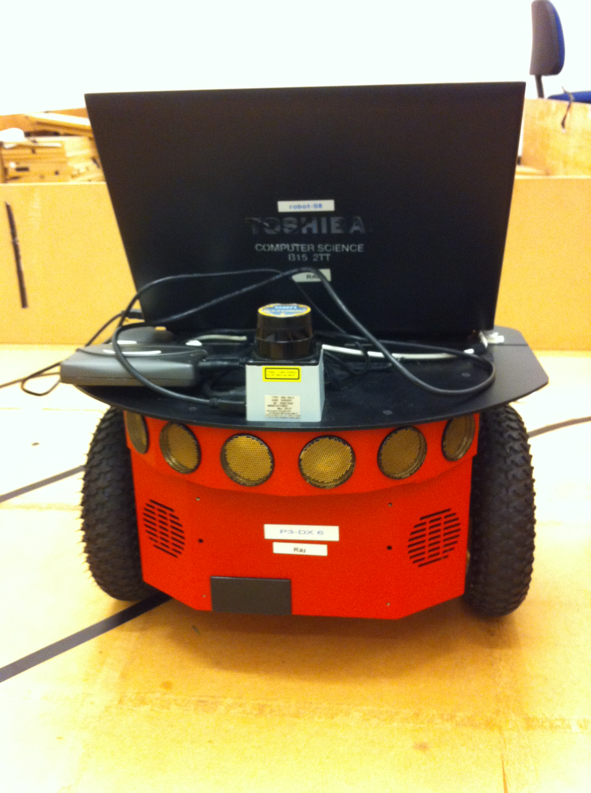

Intelligent Robotics: Team Raj
- • Jamie Pitts
- • Alex Maley
- • Sean Bastable
The module was worth 20 credits, took place in the first semester, and consisted of 100% coursework which was divided into three exercises; Moving the robot around (10%), Localisation (30%), and 'Call a Meeting' (60%).
The first exercise was used to familiarise ourselves with ROS (Robot Operating System), which is used to control the robot. We had to use the robots laser data to be able to make the robot explore around the lower ground floor of the computer science building without bumping into any obstacles. This exercise also taught us how to use Stage to simulate our programme in (without having to physically run the robot), and RVIZ which is a package to visualise different robot data, such as the laser data in a graphical form.
In the localisation exercise we had to implement our own version of AMCL (Adaptive Monte Carlo Localisation), which uses a particle filter on a pre-defined map for the robot to find its location. This exercise was mainly experiment based, and we had to perform a large amount of experiments; ranging from detecting the distance to different materials with the laser, to testing how far the robot travelled, compared to what it thought it had travelled.
For the final task, we had to make our robot create a meeting in an empty room, and then find people to attend it. This task had the most time dedicated to it, and was worth a large amount of the module. Not only did it consist of us programming the robot for the task, but we also had to do; experiments, write up a report, and create a website. We will talk about this task more in the following sections.